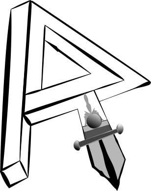

Portfolio
Tema 1 Grundlæggende HTML
Mit stilartsite blev opbygget med udgangspunkt i dadaismen, og designet ud fra et layoutdiagram. Først skulle siden laves i InDesign, og derefter skulle håndkode den i HTML. Jeg fik i forløbet lært at bruge InDesign og display:flex; i CSS, og har siden brugt flex til design af dokumentations sites i forbindelse med andre opgaver. Mine CSS skills har været lidt forældede, og har tidligere brugt float of position (hvilket jeg stadig bruger til visse ting). Jeg fik også lidt kendskab til forskellige stilarter i forløbet, herunder Russisk Konstruktivisme.
Jeg endte med at overholde layoutdiagrammet meget godt. Hvis man validere siden med flueben i "outline" kan man se min tanke bagved. Jeg er klar over der mangler et h1 element, men jeg tror det har været intentionelt, hvis jeg altså arbejder ud fra teorien om HTML5 document outline. I lang tid har jeg brugt h1+sektionselementer, men er nu begyndt at bruge h2-h6+sektionselementer. Det gør jeg for at bevare kompatibiliteten med skærmoplæsere, som endnu ikke har implementeret den nye outline rigitgt.
Virksomheds casen var særlig interssant, og jeg har efterfølgende arbejdet videre med siden i min fritid.
01.04.04 – (Stilartsite Final)
https://kea.beamtic.com/01-web/02-html/stilartsite/v3/stilartsite.html
Tema 3 Grundlæggende video
I temaet har vi arbejdet med videoproduktion, og vi har været ude at lave to interviews. Her har vi brugt forskelligt optager-udstyr til lyd og video. Lyden blev ikke så god på CPH:DOX videoen. Dels fordi der var en del rumklang på location, og dels fordi vi ikke havde fået klips-mikrofonen med. Vores B-rolls er optaget i lokalområdet og on-location. Jeg ville gerne have gjort lidt mere ud af CPH:DOX videoen. Eksempelvis kunne man have indflettet dækbilleder af mennesker som bruger deres telefoner i hverdagen, evt omkring offentlig transport, og derved give indtryk af "travlhed".
03.01.03 – (Virksomhedspræsentations video)
03.02.02 – (CPH DOX projektet)
Storyboard er placeret i vores synopsis, som der er link til nederst på siden.
03.03.02 Gruppeopgave Redesign af website
Vi har lavet et redesign af hjemmesidensom blev godt modtaget hos vores klient, og designet blev også taget i brug på et domænenavn (ccmpixart.dk). Senere har jeg selv arbejdet videre med siden, og har lavet en del småændringer på designet ud fra Christians ønsker. Udover det, så har jeg udviklet et fotogalleri til siden i PHP, som senere er udgivet som open soure (Apache 2.0 Licens) på GitHub. Den færdige side, som den så ud, da vi var færdige kan ses her:
http://tjups.dk/kea/03-video/03-redesign/finalsite/ - (Login: kea:kea)
Og med diverse småændringer, og implementering af mit fotogalleri:
Siden er blandt andet udviklet ud fra en analyse af Klientens gamle site, og herefter har vi haft en idéudvikling med wireframes og layoutdiagram. Der kan forekomme mindre variationer, da vi under design processen besluttede at gøre nogle ting anderledes. Eksempelvis er navigationsmenuen placeret til højre i vores wireframe, men på den endelige side har jeg flyttet det til venstre.
Tema 2 – Animation
Animation med HTML og CSS var nyt for mig, men på grund af min eksisterende kunnen inden for web-udvikling, har jeg rimelig hurtigt lært de nye teknikker at kende. Jeg vidste godt man kunne annimere med CSS, men jeg har ikke haft brug for det tidligere. Det kan være med til, at gøre lidt ekstra ud af en hjemmeside, så jeg er glad for, at jeg kom i gang med det.
02.01.02 – (Karakterdesign og skitser)
Jeg fik lavet enkelte skitser, men fik ikke afleveret opgaven til tiden. I stedet har jeg valgt at inkludere et par skitser direkte her på siden. I alt nåede jeg at tegne to figure i hånden, hvoraf jeg kun fik rentegnet den ene. Resten fik jeg tegnet direkte i Illustrator. Jeg fulgte enkelte tutorials på YouTube for at sparke mig selv i gang, særligt pen-tool var svært at bruge.
Der henvises i øvrigt til den semi-færdige animation (02.03.04).
02.01.03 – (Rentegnede karakterer og scenografi)
Jeg brugte en del tid på, at lære hvordan man tegner med pen-tool i Illustrator, og fik derfor ikke tegnet alt det færdigt som jeg havde planlagt i min idébeskrivelse og flowchart (02.01.01).
Til denne form for animation foretrækker jeg at bruge SVG filer i kombination med ren HTML og CSS. Derved mister man ikke detaljer ved høje skærmopløsninger.
Jeg havde blandt andet planlagt, at lave en slags skyskrapere som forgrund, i perspektiv, i stedet for de lidt dårligt tegnede-huse i forgrunden, og den flade city-baggrund. Det ville bestemt være realistisk, nu hvor jeg er blevet en del bedre til at tegne med pen-tool, og hvor jeg også har brugt perspektiv funktionen tegning af husene og bussen.
02.03.01 – (Lydsiden)
Her fik jeg fundet noget gratis lyd til bussens ankomst. Det gav ikke mening at finde flere lyde, da jeg endnu ikke var færdig med rentegningen af min scenografi. Jeg har dog alligevel et godt touch med lydoptagelse, og brug af lyde i HTML med jQuery, og kan uden problemer optage og indsætte mine egne lyde. Jeg nåede ikke at optage en speak, som ellers var et krav i opgaven.
Til lyd foretrækker jeg enten at bruge ogg, som er et "åbent standard", eller det gode gamle mp3 format, som vi kender det fra mp3-afspillere.
02.03.04 – (Den færdige fortælling)
02.04.03 – (Sex og Samfund)

I vores gruppeprojekt fik jeg bedre mulighed for, at slå mig løs med både indsættelse af lyd og animation. Vores city baggrund flytter sig lidt (ca 1px) undervejs i udskiftningen af baggrunden, hvilket nok skyldes, at den ikke er tegnet helt præcist til fra kant-til-kant i Illustrator.
Vi blev opmærksom på et problem med preloading af grafik og lyd, men jeg tænkte ikke selv over det, før det var for sent, og vi havde lagt spillet op på serveren. Problemet opstår ikke lokalt. Jeg kunne sagtens have løst problemet, men vi havde ikke mere tid før vi skulle aflevære.
En løsning på problemet med preloading af grafik kan være, at bruge de såkaldte "data uris" til at inkludere grafikken direkte i CSS filen. Det kan dog betyde, at CSS filen vil blive meget stor, og derved flytter man kun problemet. Desuden vil det kræve en omkodning af siden. Problemet med lyden kan løses ved, at indsætte lyd-elementerne før de skal bruges.
Når man spiller spillet, kan man lige "køre det igennem" et par gange, så burde alt være indlæst. Det er et rimelig kort spil.
Selve problemet skyldes, at lyd og grafik først skal downloades inden brug. Her har download hastighed stor betydning. Serveren er placeret hos Amazon (AWS), så den er for det meste rimelig hurtig.
Credits-animationen til sidst er vi meget glade for i vores gruppe. Vi har arbejdet med idéen om at have "credits" i vores dokumentations-site, og herfra har vi simpelthen overført idéen til vores spil. Så vidt jeg husker er den lavet med en kombination af CSS animationer og jQuery.
https://kea.beamtic.com/animation/02_04_03_17_dokumentationssite/index.html
Tema 4 Grundlæggende UX
I første gruppeopgave var vi ikke så gode til at kommunikere med hinanden, men det gik betydeligt bedre i anden omgang, hvor vi også var bedre til at fordele opgaverne. Vi fik alle deltaget i de forskellige processer, lige fra de første skitser til design af den endelige prototype af vores app. Jeg kom godt igang med Trello, og fik både tegnet skitser og lavet et logo i Illustrator. Derudover fik jeg også arbejdet lidt med XD.
04.01.05 – (Præsentationsdelen af KEA app'en)
https://kea.beamtic.com/04-ux/01_dokumentationssite/afleveringssite.html
04.01.06 – (Dokumentationsdelen KEA app'en)
https://kea.beamtic.com/04-ux/01_dokumentationssite/dokumentationssite.html
04.02.03 – (Dokumentation til Republikken)
Republikken var et spændende forløb, hvor vi havde en god idé-generering og arbejdsproces, og så var vi endda i blandt de 3 vinder-grupper.
Logoet lavede jeg i Illustrator, ud fra en tegning som en anden i gruppen havde lavet.
Vores app leger lidt med idéen om at lave et slags "spil", uden det dog helt bliver et spil. Brugerne vil have mulighed for, at optjene point, når de hjælper andre brugere. Det sker ved at løse såkaldte "quests", som er en slags "råb om hjælp", eller små opgaver postet af andre brugere.
04.02.04 – (Præsentation af Republikken)
https://kea.beamtic.com/04-ux/republikken/afleveringssite.html